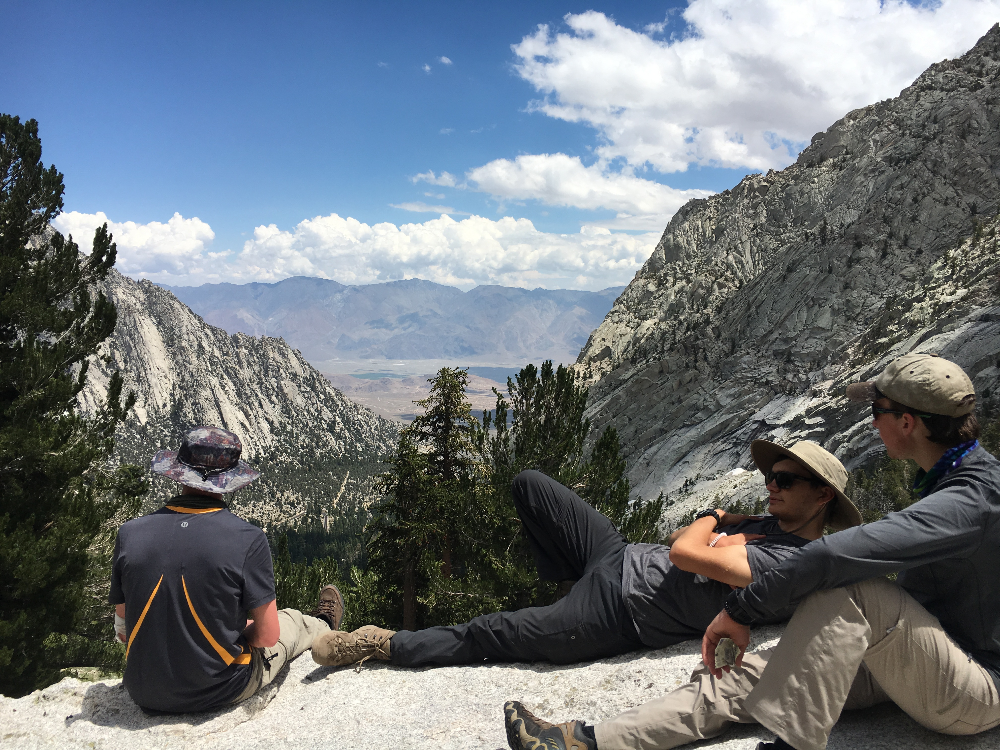

My personality and spirit.
I love creating. It's what I do. I get out of bed each morning with the intent of pushing my capabilities as far as I can before I hit the hay again. Wether it is through art, media, or technology, I love to solve problems and elevate others. With an unquenchable curiosity and a restless spirit, I am always looking for new challenges and experiences.

Continue the adventure on my socials